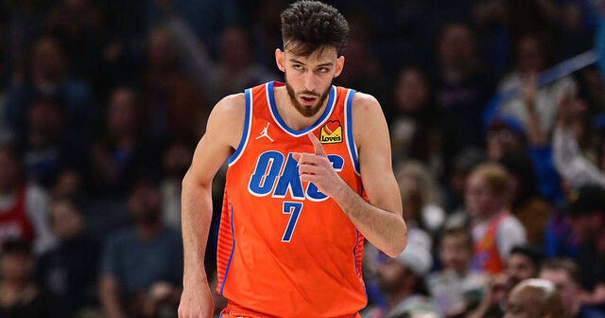

Chet Holmgren Out 8-10 Weeks With a Patellar Tendon Tear — the Thunder's Injury Crisis Deepens
Oklahoma City announced Friday that Chet Holmgren underwent treatment for a small tear in his right patellar tendon and is expected to miss 8-10 weeks — leaving the Thunder without three starters and their top bench spark.

Oklahoma City's injury crisis just got worse — and this time it is the franchise centerpiece.
The Thunder announced Friday night that Chet Holmgren underwent a biological treatment for a small tear in his right patellar tendon and is expected to return in 8-10 weeks, taking him out into January. Holmgren first felt mild discomfort in his right knee on October 25, and after consultations with specialists, the team opted for the treatment, which it called successful, with a full recovery expected.
What the Thunder are missing
Holmgren had already missed the Thunder's last two games, including Wednesday's 120-96 loss at Dallas, while listed with right knee patellar tendinitis. The new timeline confirms the worst: Oklahoma City (4-1) heads to Houston on Saturday without him — and without nearly everybody else.
The full list is staggering. Jalen Williams is out after surgery on a fractured fibula and dislocated ankle and will be re-evaluated before the end of the regular season. Cason Wallace had successful surgery Friday on a torn labrum in his left shoulder. Alex Caruso is out with a right ankle sprain, Nikola Topic with low back surgery, and Thomas Sorber with right knee surgery. The Thunder signed Ochai Agbaji on Friday just to fill their open 15th roster spot.
That leaves Shai Gilgeous-Alexander, Jared McCain, Ajay Mitchell, Kenrich Williams and Isaiah Hartenstein as the likely starting five in Houston — a group that got run off the floor in Dallas when the injury absences finally caught up with them.
The road ahead
Eight to ten weeks is not a season-ender, and the Thunder were careful to say Holmgren should make a full recovery. But it is a massive chunk of the season for a 4-1 team that opened the year looking like a contender, and it turns the next two months into a survival exercise: stay afloat, get healthy, and hope the cavalry arrives before the standings damage is permanent.
Sources: The Oklahoman, Sports Mole
Gear up: Fanatics